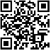

No gesture recognized!
Here's your portable gesture! Portable gestures are based on the gesture formalization for multi-touch (GeForMT). They are directly embedded in programming code and serve as intermediary between gesture design and concrete recognition algorithms.

No gesture selected!